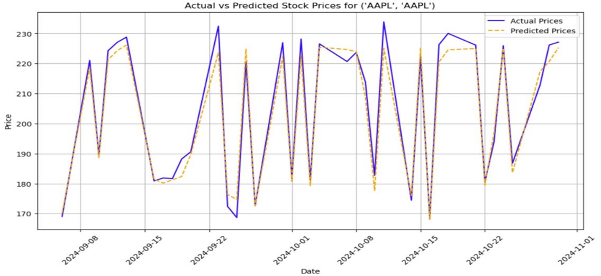
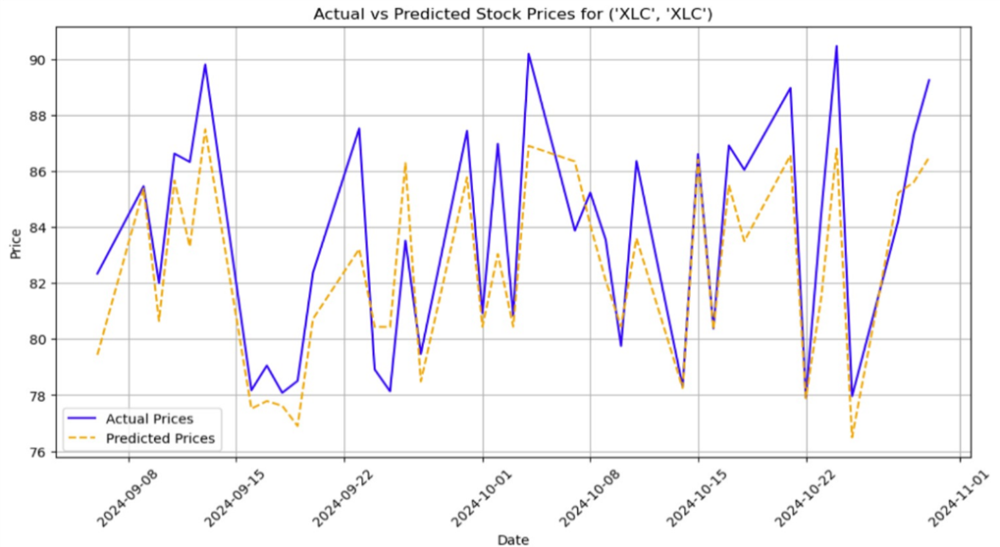
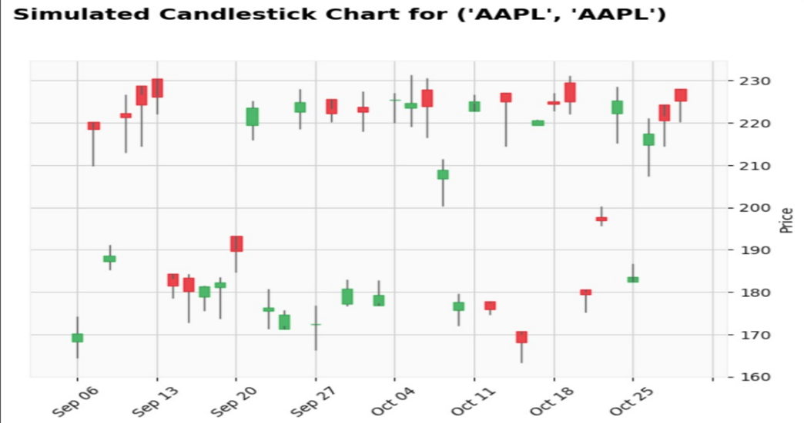
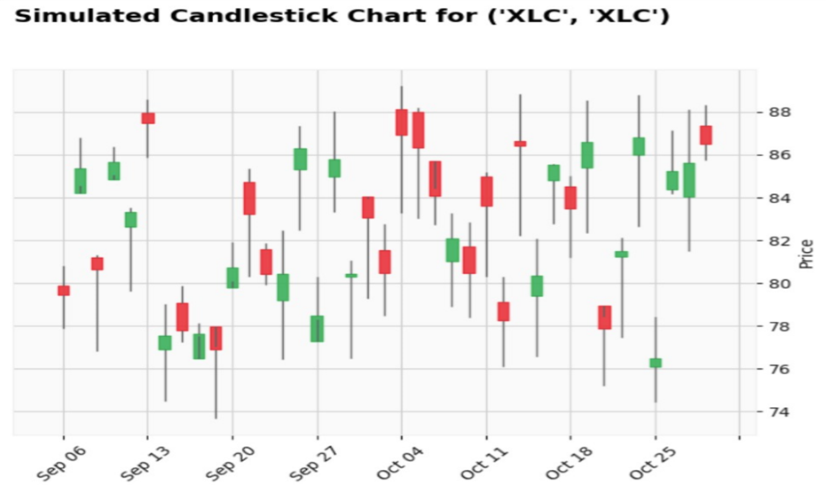
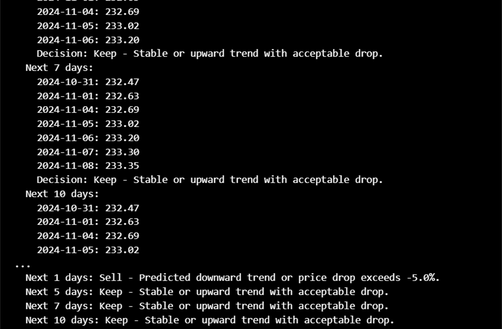

A deep-learning approach for forecasting stock prices and making strategic “Keep” or “Sell” decisions for AAPL & XLC.
This project leverages CNN-Bidirectional LSTM models with Attention to forecast stock prices for optimized portfolio management. The model makes buy/sell decisions based on predictive analytics and risk thresholds.
Traditional financial forecasting often lacks precision in volatile markets. Our objective was to build a deep learning model that can accurately predict stock prices and inform investment decisions for assets like AAPL and XLC.
CNN-BiLSTM with Attention outperformed other models with a significantly lower Mean Squared Error (MSE). Predictions were inverse-transformed to compare with actual prices and plotted for visualization. A decision-making module labeled each asset as “Keep” or “Sell.”
| Models | Average MSE |
|---|---|
| CNN-Bidirectional LSTM with Attention | 6.42 |
| CNN-LSTM Based Model | 9.74 |
| Combined SARIMA CNN-LSTM | 38.53 |
Our model demonstrated robust predictive power, guiding users with actionable insights. Visualizations like line plots and candlestick charts helped interpret model predictions effectively.

Figure 1: Actual vs Predicted Stock Prices for AAPL

Figure 2: Actual vs Predicted Stock Prices for XLC

Figure 3: Simulated Candlestick Chart for AAPL

Figure 4: Simulated Candlestick Chart for XLC
Purpose: Decide whether to "Keep" or "Sell" a stock based on future price predictions.
Below is the actual system-generated output summarizing the prediction-based decision for stock actions.

Figure: System Output Showing Predicted Decisions for Different Time Windows
This system provides a scalable, real-time decision support tool for portfolio management, reducing emotional trading and enhancing strategic investment decisions.